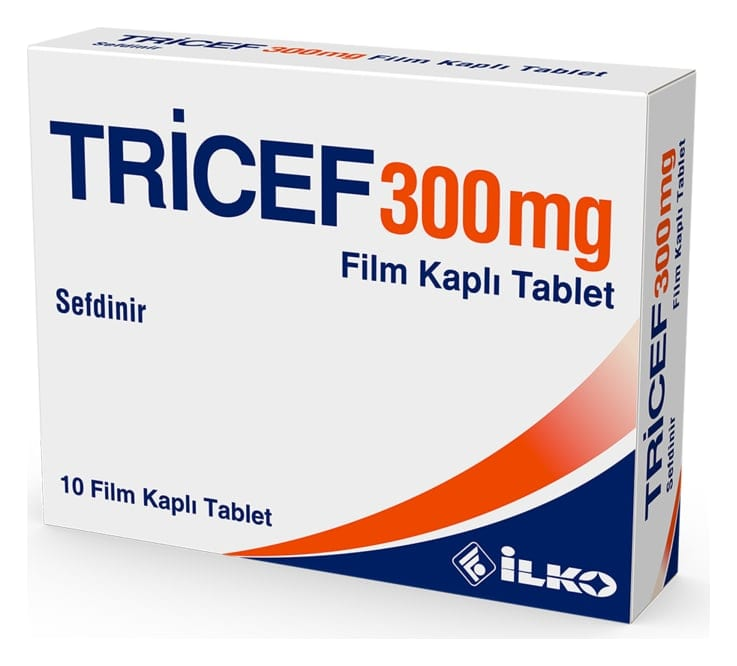

Tricef 300 mg Film Kaplı TABLET,10 Adet

Ne için kullanılır
KT · Bölüm 12. TRİCEF’i kullanmadan önce dikkat edilmesi gerekenler 3. TRİCEF nasıl kullanılır? 4. Olası yan etkiler nelerdir? 5. TRİCEF’in saklanması Başlıkları yer almaktadır.
1. TRİCEF nedir ve niçin kullanılır?
TRİCEF 300 mg film tabletteki etkin madde sefdinirdir. Sefdinir, üçüncü kuşak sefalosporin
grubu olarak adlandırılan antibakteriyel bir ilaç grubunda yer alır.
TRİCEF, 10 ve 20 adet beyaz renkli, oval şekilli, bikonveks, çentiksiz film kaplı tabletler içeren blisterlerde ve kullanma talimatı ile birlikte karton kutuda ambalajlanmıştır.
TRİCEF aşağıda yer alan hastalıkların (iltihap oluşturan mikrobik hastalık) tedavisinde
kullanılır:
Ergen ve yetişkinlerde: a. Toplum kökenli pnömoni (akciğer iltihabı), b. Kronik bronşitin (bronş iltihabının) akut alevlenmesi, c. Akut maksiller sinüzit (Yüz kemiklerinin içindeki hava boşluklarının iltihabı), d. Farenjit / Tonsillit (Yutak/bademcik iltihabı), e. Komplike olmayan cilt ve yumuşak doku enfeksiyonlarında (iltihapları) kullanılır. Bu ilacı kullanmaya başlamadan önce bu KULLANMA TALİMATINI dikkatlice okuyunuz, çünkü sizin için önemli bilgiler içermektedir. • Bu kullanma talimatını saklayınız. Daha sonra tekrar okumaya ihtiyaç duyabilirsiniz. • Eğer ilave sorularınız olursa, lütfen doktorunuza veya eczacınıza danışınız. • Bu ilaç kişisel olarak size reçete edilmiştir, başkalarına vermeyiniz. • Bu ilacın kullanımı sırasında, doktora veya hastaneye gittiğinizde doktorunuza bu ilacı kullandığınızı söyleyiniz. • Bu talimatta yazılanlara aynen uyunuz. İlaç hakkında size Önerilen dozun dışında yüksek veya düşük doz kullanmayınız.